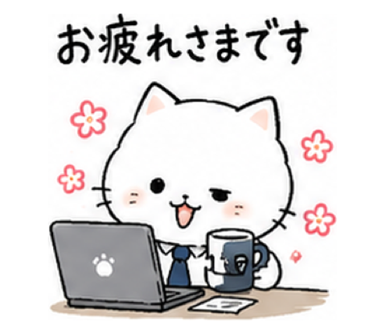
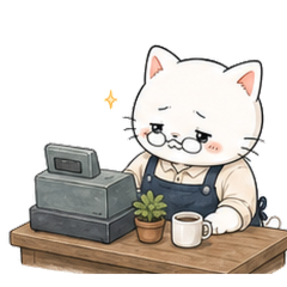
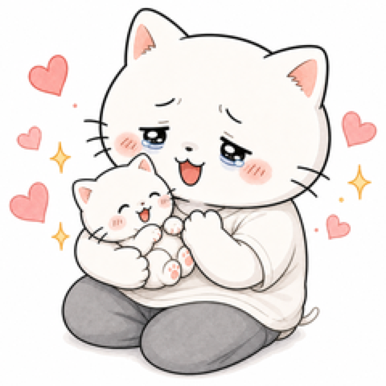
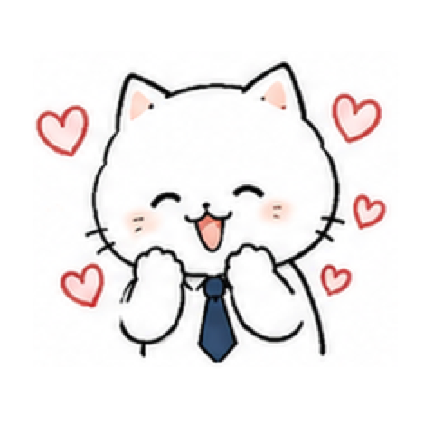
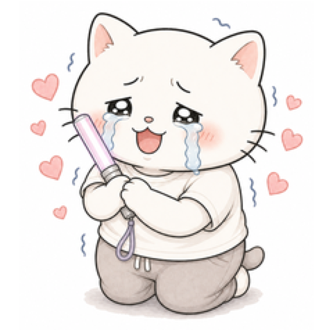
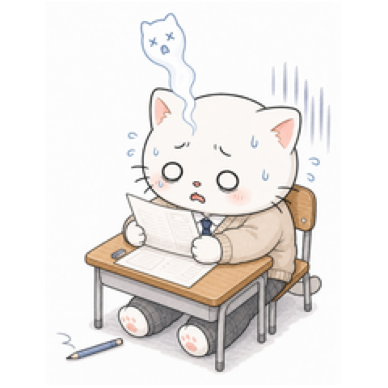
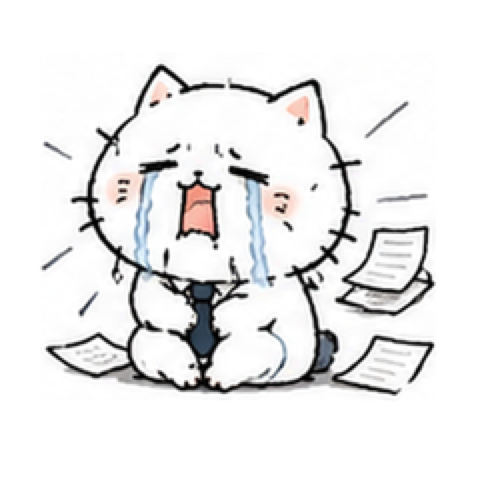
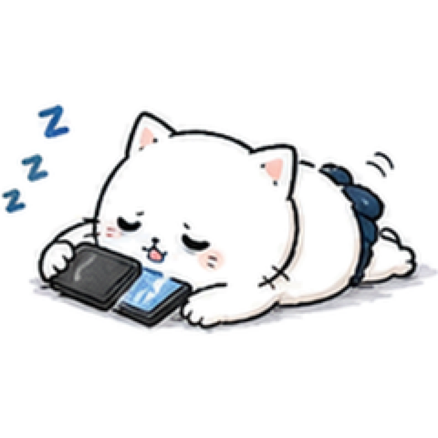
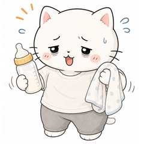
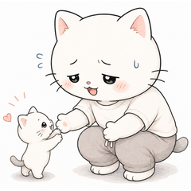

限界自営業ねこ
お店も、家族も、なんとか。
帳簿、お客さん、在庫、税金、家賃。自営業の限界も、ねこに代弁させて。
LINEで審査中 ・ 近日登場
限界ねこ / Genkai Neko
がんばる人の自虐を、ねこが代弁する LINEスタンプ。社畜も、エンジニアも、今日もおつかれさま。

限界ねこってなに?
いつも限界まで頑張って、ちょっと放心しているねこ。社畜、エンジニア、育児、推し活、勉強 — 言えない「心の声」を、ねこが代わりにつぶやきます。かわいいから、ぜんぶ許せる。
家族紹介
今日もみんな、それぞれ限界。
同じ屋根の下で、みんなちがう「限界」を生きている — ねこの家族です。

父
家族の前では、
だいじょうぶな顔。
母
いちばん強い、
家族の中心。

長女
「寝た…」と思ったら、
起きる。

長男
今日もそっと、
「帰りたい」。

次女
推しのために、
今日も情緒むり。

末っ子
単位と引き換えに、
生きてる。
スタンプ一覧
限界自営業ねこ
帳簿、お客さん、在庫、税金、家賃。自営業の限界も、ねこに代弁させて。
LINEで審査中 ・ 近日登場




FOLLOW